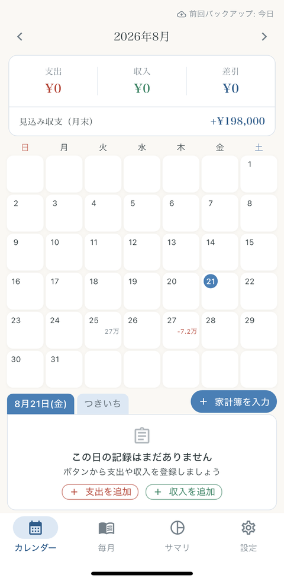
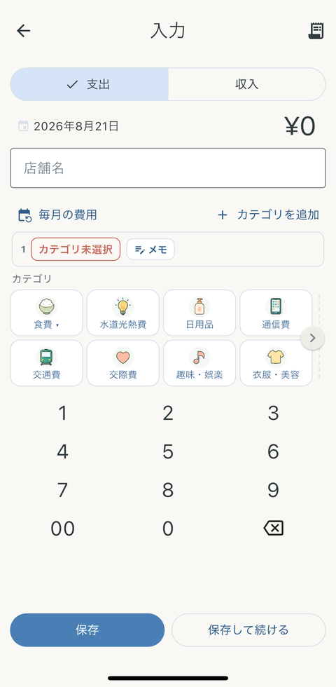
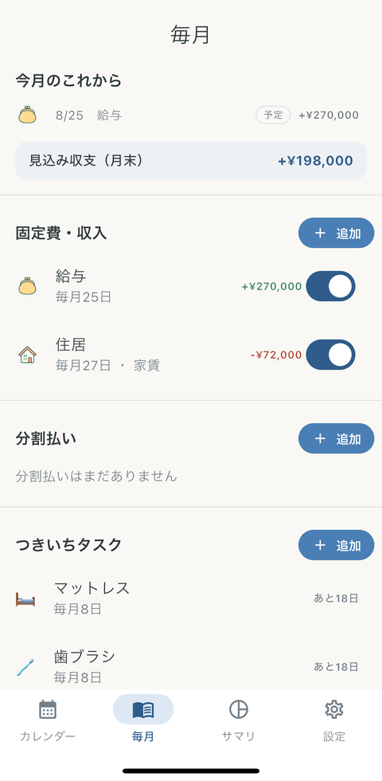

Mobile App
経理の家計簿
カレンダーを起点に、その日の支出・収入を確認して、そのまますばやく入力できる個人向けの家計簿アプリです。
概要
家計簿が続かない理由の多くは「入力が面倒」であることだと考え、月カレンダーの画面から日付をたどってそのまま入力できる形にしました。その日にいくら使ったのかがカレンダー上で見えるので、入力と振り返りが同じ画面で完結します。
設計上の原則として、アプリは財務データを自動的・バックグラウンド的に外部サービスへ送信しません。データが端末の外に出るのは、利用者自身が明示的にエクスポート操作をしたときだけです。
主な機能
- カレンダー起点の収支入力 — 月カレンダーで日ごとの収支を確認し、その日を選んでそのまま記録できます。
- 内訳（サブカテゴリ）の記録 — カテゴリの下にさらに内訳を持たせて、何にいくら使ったのかを細かく残せます。
- 端末内で完結するデータ管理 — 記録は端末内のSQLite（drift）に保存します。自動送信・バックグラウンド送信は行いません。
- バックアップの書き出しと読み込み — 利用者が明示的に操作したときだけ、データをファイルとして持ち出せます。
- 読みやすさの調整 — カレンダー上の金額表示や配色テーマを、画面が詰まらないように整えています。
画面
-

カレンダー。月の支出・収入・差引と月末の見込み収支をまとめ、日付ごとの記録をその場で確認できます。 -

入力。カテゴリを選んでテンキーで金額を打つだけ。続けて入力できる「保存して続ける」も備えています。 -

毎月。給与や家賃などの固定費・収入を登録しておくと、月末の見込み収支に自動で反映されます。
ストアページ: 経理の家計簿（App Store）